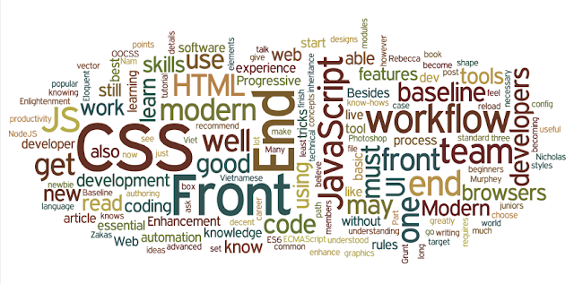

Front End là cách gọi quy trình sử dụng các ngôn ngữ HTML, CSS, JavaScript thiết kế và xây dựng giao diện cho các trang web hoặc ứng dụng web để người dùng có thể xem và tương tác trực tiếp trên đó. Mục tiêu của việc thiết kế trang web là giúp cho người dùng dễ dàng sử dụng khi mở trang web. Điều này rất khó khăn vì trong thực tế người dụng sử dụng rất nhiều loại thiết bị khác nhau với kích thước và độ phân giải khác nhau, do đó buộc Front End Developer phải xem xét hết các khía cạnh này khi thiết kế trang web. Cần phải đảm bảo trang web xuất hiện chính xác trên các trình duyệt khác nhau, hệ điều hành khác nhau và các thiết bị khác nhau.
Để có trở thành Front End Developer cần rất nhiều kỹ năng nhưng 3 kỹ năng có bản cần phải nắm đó là HTML, CSS, Javascript. Bên cạnh đó Front End Developer cần nắm các kỹ năng khác mà nhà tuyển dụng đang tìm kiếm. Xem chi tiết các kỹ năng một Front End giỏi cần phải thông thạo ở phần dưới đây:
HTML và CSS (Cascading Style Sheets) là các ngôn ngữ cơ bản nhất để phát triển giao diện web. Nếu không thông thạo hai ngôn ngữ này bạn sẽ không thể nào thiết kế được trang web.
Đây là hai ngôn ngữ đầu tiên bạn nên học khi muốn trở thành
một Front End Developer.
JavaScript cho phép bạn có thể tạo ra rất nhiều tính năng tương tác cho trang web. Giúp cho người dùng dễ dàng sử dụng website hơn. JavaScript là ngôn ngữ có thể nói là phổ biến nhất trên thế giới và đặc biệt quan trọng đối với Front End Developer.
JQuery là một thư viện JavaScript thu nhỏ. Có tác dụng giúp tạo ra các tương tác, sự kiện, hiệu ứng trên website… một cách dễ dàng.
Có kiến thức và kỹ năng sử dụng thành thạo các Frameworks của Javascript như AngularJS, Backbone, Ember, ReacJS. Các Frameworks này giúp lập trình viên tiết kiệm được thời gian trong quá trình lập trình, tối ưu hóa và dễ dàng tạo ra các tương tác thân thiện với người dùng.
CSS và các frameworks front-end hiện nay phổ biến nhất là Bootstrap giúp hỗ trợ thiết kế website nhanh và chuẩn hơn. Đây là Framework mà hầu hết Front End developer đều cần bạn am hiểu và vận dụng tốt.
Preprocessors là yếu tố giúp tăng tốc độ code CSS. Một CSS Preprocessors bổ sung thêm functionality cho CSS để CSS scalable được và dễ làm việc hơn. Nó xử lý code trước khi bạn publish lên website, và biến nó thành 1 CSS thân thiện với cross-browser và có format tốt. Theo job listings thực tế thì SASS và LESS là hai preprocessors có nhu cầu cao nhất.
Hiện nay, tỷ lệ truy cập internet từ thiết bị di dộng đã cao hơn desktop rất nhiều, do đó kỹ năng thiết kế mobile đóng vai trò quan trọng trong mắt các nhà tuyển dụng. Responsive design là thiết kế trang web có thể tương thích với nhiều loại thiết bị di dộng có kích thước hiển thị khác nhau.
Biết cách implement 1 design như thế nào là tốt nhất, biết cách fix bug, biết cách nhận diện hoạt động của frontend code với backend code đang được implement… tất cả đều liên quan đến kĩ năng giải quyết vấn đề.
– Mức lương đối với lập trình viên Front End khi mới ra trường trung bình khoảng 10 triệu/ tháng
– Đối với lập trình viên Front End có kinh nghiệm 2-3 năm mức lương nhận được có thể lên đến 18 triệu/ tháng
– Từ 5 -7 năm kinh nghiệm có thể đạt được mức lương lên đến 25 triệu/tháng
– Khi đã có nhiều năm kinh nghiệm và đảm nhận các vị trí quản lý cao hơn mức lương có thể lên đến hơn 50 triệu /tháng.